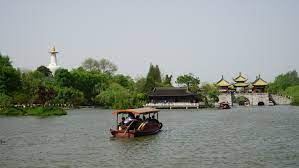

Slender West Lake
The Slender West Lake is a scenic lake located in Yangzhou, Jiangsu Province, China. It is renowned for its natural beauty, elegant gardens, and historic sites. The lake covers an area of about 70 hectares and is surrounded by lush greenery, pavilions, and bridges.
The lake got its name due to its long and narrow shape, resembling a slender jade belt. It is a popular destination for leisurely walks, boat rides, and enjoying the serene surroundings. The picturesque landscape, with weeping willows, lotus flowers, and beautiful reflections in the water, creates a tranquil and enchanting atmosphere.
Within the Slender West Lake area, there are several notable attractions worth exploring. These include the Five Pavilion Bridge, White Pagoda, Daming Temple, and Garden of Solitary Delight. Each of these landmarks adds to the charm and cultural significance of the lake.
Daming Temple
Daming Temple, also known as the Great Brightness Temple, is a famous Buddhist temple located in Yangzhou, Jiangsu Province, China. With a history dating back over a thousand years, it is one of the oldest and most revered temples in the region.
The temple complex covers a large area and consists of various halls, pavilions, and gardens. It showcases traditional Chinese Buddhist architecture and exquisite craftsmanship. The main hall, known as the Mahavira Hall, houses a majestic statue of the Buddha, surrounded by intricate wood carvings and colorful paintings.

He garden
The garden spans an area of about 8 hectares and is divided into different sections, each showcasing unique elements of traditional Chinese garden design. It harmoniously combines water features, rockeries, bridges, and pavilions to create a serene and picturesque environment.
One of the highlights of the He Garden is its stunning lotus ponds. During the summer months, the ponds come alive with vibrant lotus blooms, creating a mesmerizing display of colors and fragrances. Visitors can stroll along the winding paths, enjoy the peaceful ambiance, and admire the natural beauty of the lotus flowers.
Throughout the garden, there are various pavilions and buildings that serve as vantage points for panoramic views and places for relaxation. These structures feature intricate wood carvings, delicate paintings, and ornate decorations, showcasing the artistic craftsmanship of ancient China.

Ge garden
The Ge Garden, also known as the Geyuan Garden or the Imperial Garden, is a classic Chinese garden located in Yangzhou, Jiangsu Province, China. It is renowned for its exquisite design, harmonious layout, and rich cultural heritage.
The garden covers an area of about 2.5 hectares and is divided into several sections, each with its own unique features. It showcases traditional elements of Chinese garden design, including pavilions, bridges, rockeries, water features, and meticulously manicured plants.